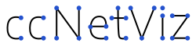

Line dotted animation example
Animation type:
None
Basic
Gradient
Double Gradient
Bubble
Wave
Dotted
Animation speed:
1.
Animation ease effects:
linear
sin-in
sin-out
sin-inout
bounce-in
bounce-out
bounce-inout
exp-in
exp-out
exp-inout
circular-in
circular-out
circular-inout
quad-in
quad-out
quad-inout
cubic-in
cubic-out
cubic-inout
quart-in
quart-out
quart-inout
quint-in
quint-out
quint-inout
More detailed information please visit the
documentation page
.
